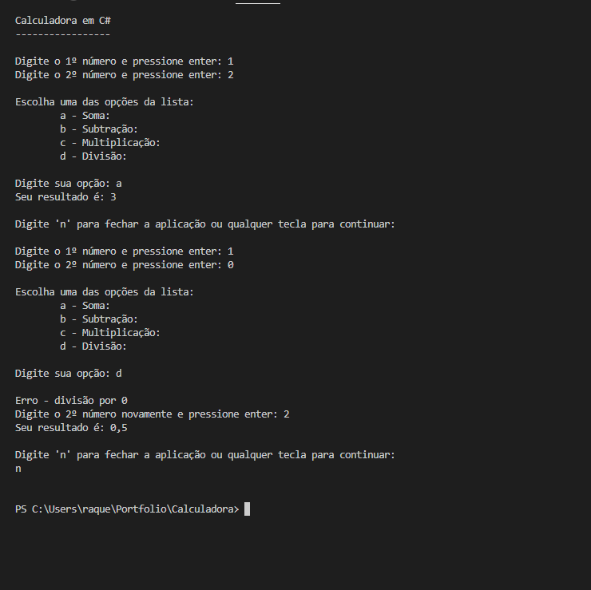

Calculadora que realiza as operações básicas de matemática
Descrição:
Criação de uma calculadora básica em C#, onde poderá ser realizadas operações de somar, subtrair, multiplicar e dividir.
O usuário poderá entrar com dois números em formato double.
Restrições: a calculadora não deve aceitar divisão por zero e nao pode receber letras em suas operações.
Aparência final do programa:
